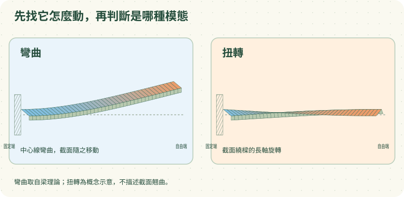
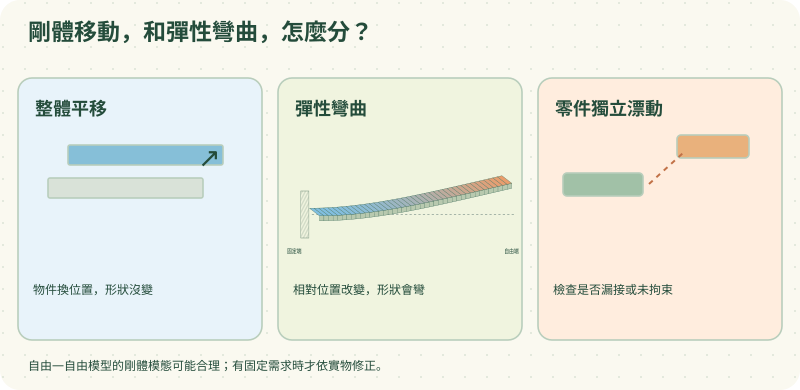

ANSYS LAB NOTES / 圖解學習站原來，結構會
第一站・模態分析
原來，結構會
這樣振！✳
先看看它怎麼動，再弄懂為什麼。
把觀念、操作與排錯，變成看得懂、玩得動的實驗室筆記。
HOW DOES IT MOVE?看圖先懂一點點

彎起來？扭過去？每種姿勢都值得看懂。
01目前開放主題
04入門學習筆記
2024 R2教學基準版本
0 / 4本機已讀進度
先玩再懂 / VIBRATION PLAYGROUND
點一下，認識它的不同振動姿勢
PLAY WITH A MODE SHAPE
教學示意同一支樑，可以怎麼振？

未變形中心線內部節點（中心線）相對位移 0 1
一階彎曲 · Z 向
整支樑往同一方向彎。除了固定端，沒有其他內部節點。
彎曲依 Euler–Bernoulli 梁理論繪製；扭轉為概念插值。動畫放大、同速慢放，顏色依各型態最大位移正規化；不是 ANSYS 求解結果，也不是實際三維階數排序。 圖解依據 ↗
YOUR LEARNING PATH
模態分析專區 ↗從這裡，開始第一個分析
KNOWLEDGE LIBRARY
每一篇，都讓下一步更清楚
共 4 篇筆記
觀念筆記01
先讀懂固有頻率，再看振型
像看一支尺的不同振動姿勢：先玩振型示意，再分清楚固有頻率、節點與顯示振幅。
10 分鐘 · 入門開始閱讀 ↗
操作教學02

第一個案例：懸臂樑模態分析
從 Workbench 建立分析系統，以單一長方形實體練習材料、固定端、網格及前六階結果。
15 分鐘 · 入門開始閱讀 ↗
問題紀錄03

接近 0 Hz：先看振型，再改設定
從自由結構、拘束不足到未連接零件，依序找出近零頻率的物理意義。
7 分鐘 · 入門開始閱讀 ↗
觀念筆記04

網格變細之前，先決定要比較什麼
用相同振型的頻率變化檢查網格敏感度，避免只看元素數或階數就宣稱收斂。
6 分鐘 · 入門開始閱讀 ↗
找不到符合的筆記，試試其他關鍵詞或類型。
GROW WITH THE LAB